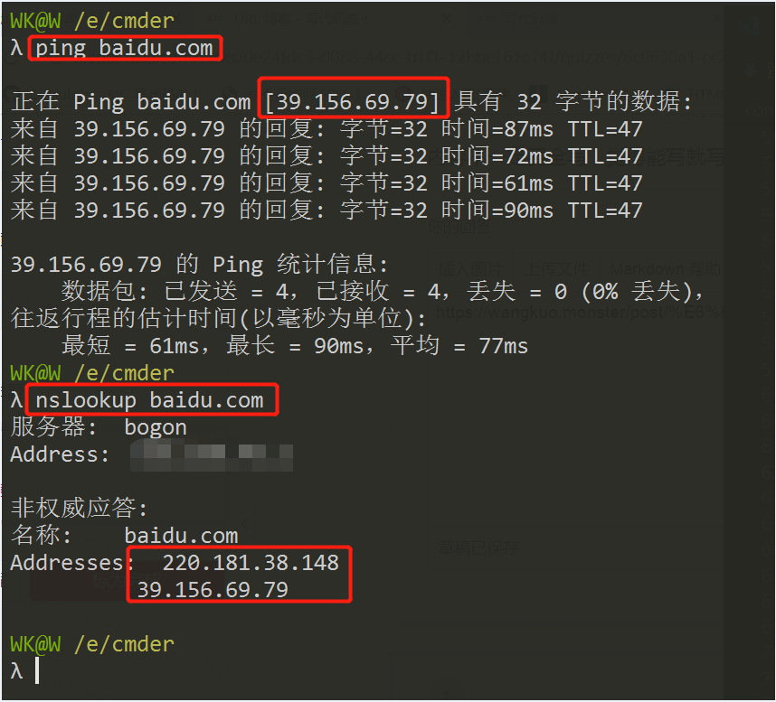
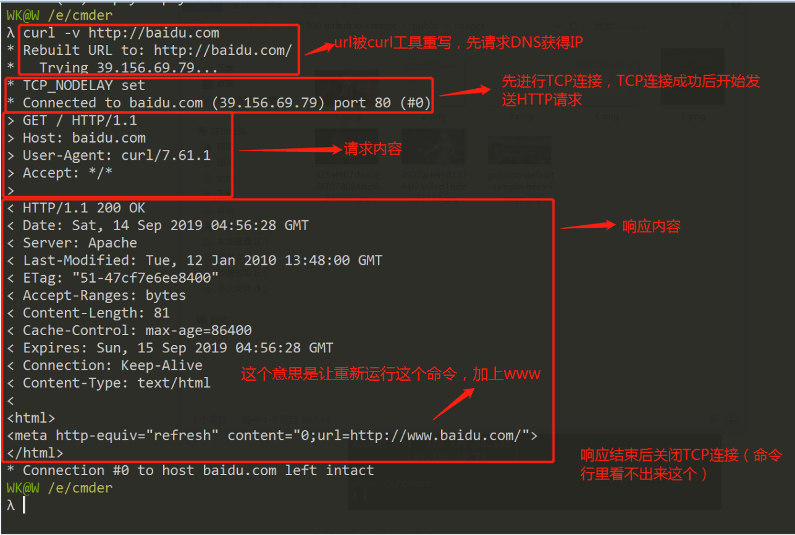
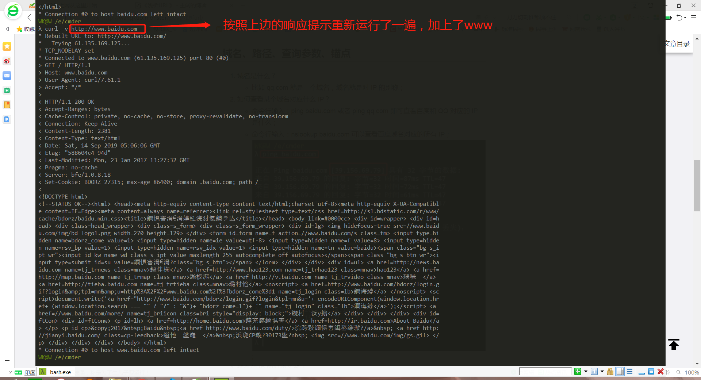

《浅析URL》
浅析 URL
网络和 IP
- 李爵士发明的三样东西: WWW=URL+HTTP+HTML
- URL:Uniform Resource Locator; HTTP:HyperText Transfer Protocol; HTML:HyperText Markup Language; IP：Internet Protocol;
- IP 主要约定了两件事：
- 如何定位一台设备；
- 如何封装数据报文，以跟其他设备交流；
- IP 分为内网和外网，内网和外网通过路由器联系到一起；
- 如何获取外网 IP？
- 从电信租用宽带，一年一千多；
- 买一个路由器，然后用电脑和手机连接路由器广播出来的 wifi；
- 只要路由器连上电信的服务器，那么路由器就会有一个【外网 IP】，比如【14.17.32.211】就是一个外网 IP，这就是你在互联网中的地址；
- 如果重启路由器，那么可能被分配一个【外网 IP】，也就是说你的路由器没有固定的【外网 IP】；
- 但是有个问题，你的路由器的外网 IP 如果是 14.17.32.211，那么你的手机和电脑的 IP 又是什么呢？——答案是【内网 IP】；
- 内网 IP：
- 路由器会在你的家里创建一个内网，内网中的设备使用内网 IP，一般来说这个 IP 的格式都是 192.168.xxx.xxx;
- 一般路由器会给自己分配一个好记的内网 IP，如 192.168.1.1；
- 然后路由器会给内网中的不同设备分配不同的内网 IP，如给电脑分配 192.168.1.2，给手机分配 192.168.1.3，以此类推；
- 路由器的功能：
- 简单说就是内网和外网的桥梁，将内网和外网联系起来；
- 内网和外网都是相互隔绝的，内网中的设备不能访问外网，外网中的设备也不能访问内网。而有了路由器就可以使内网和外网相互访问，但是这个访问也是只能通过路由器进行，内网和外网唯一的联通点就是路由器；
- 路由器有时候也被叫做：网关；
- 几个特殊的 IP：
- 127.0.0.1 表示自己；
- localhost 通过 hosts 指定为自己；
- 0.0.0.0 不表示任何设备；
端口
- 一台机器可以提供很多服务，每个服务一个号码，这个号码就叫端口号：port；
- 打个比喻：麦当劳有两个窗口，一号快餐，二号咖啡。你去快餐窗口点咖啡会被拒绝，让你去另一个咖啡窗口，因为你去错了窗口；
- 要提供 HTTP 服务最好使用 80 端口； 要提供 HTTPS 服务最好使用 443 端口； 要提供 FTP 服务最好使用 21 端口；
- 一共有 65535 个端口，基本够用；
- 端口使用还有什么规则？
- 0——1023 号端口是留给系统使用的；
- 你只有拥有了管理员权限后，才能使用这 1024 个端口；
- 其他端口可以给普通用户使用；
- 比如 http-server 默认使用 8080 端口；
- 一个端口被占用，你就只能换一个端口；
- 总而言之，IP 和端口缺一不可；
域名、路径、查询参数、锚点
- 域名是什么？
- 比如 qq.com 就是一个域名，域名就是对 IP 的别称；
- 如何查看某个域名对应什么 IP？
- 命令行输入：ping baidu.com 或者 ping qq.com 即可查看百度和 QQ 对应的 IP 是什么；
- 命令行输入：nslookup baidu.com 可以查看百度域名对应的所有 IP； ;
- 域名和 IP 的对应关系？
- 一个域名可以对应不同 IP，这叫均衡负载，防止一台机器扛不住；
- 一个 IP 可以对应不同域名，这叫共享主机，穷开发者会这么做；
- 域名和 IP 是怎么对应起来的?
- 通过 DNS：Domain Name System（域名服务器）；
- 当输入 xiedaimala.com 的时候是一个什么样的请求过程？
- 浏览器会向电信/联通提供的 DNS 服务器询问 xiedaimala.com 对应什么 IP；
- 电信/联通会回答一个 IP；
- 然后 Chrome 才会向对应的 80⁄443 端口发送请求；
- 请求内容是查看 xiedaimala.com 的首页；
- xiedaimala.com 和 www.xiedaimala.com 不是同一个域名：
- com 是顶级域名；
- xiedaimala.com 是二级域名；
- www.xiedaimala.com 是三级域名；
- 他们是父子关系；
- 例如 github.io 把子域名 xxx.github.io 免费给大家使用；
- 所以你应该知道 www.xiedaimala.com 和 xiedaimala.com 可以不是同一家公司，也可以是同一家公司；
- 如何请求不同的页面？路径可以做到：
- 如何请求同一个页面的不同内容？查询参数可以做到：
- www.baidu.com/s?wd=hi;
- www.baidu.com/s?wd=hello;
- 如何请求同一个页面，同一个内容的不同位置？锚点可以做到：
- UR L 由什么组成？
- 协议+域名或 IP+端口号+路径+查询字符串+锚点；
- url 举例：https://www.baidu.com/s?wd=hello&rsv_spt=1#5;
- 就算没写端口，你也应该知道端口。https 默认端口是 443；
curl 命令
用 curl 可以发 HTTP 请求，比如：
- curl -v http://baidu.com;
- curl -s -v –https://www.baidu.com; ; ;
理解以下概念(上边有图)：
- url 会被 curl 工具重写，先请求 DNS 获得 IP；
- 先进行 TCP 链接，TCP 连接成功后，开始发送 HTTP 请求；
- 请求内容看一眼；
- 响应内容看一眼；
- 响应结束后，关闭 TCP 连接（命令行里看不出来）；
- 真正结束；
HTTP：规定请求的格式是什么，响应的格式是什么